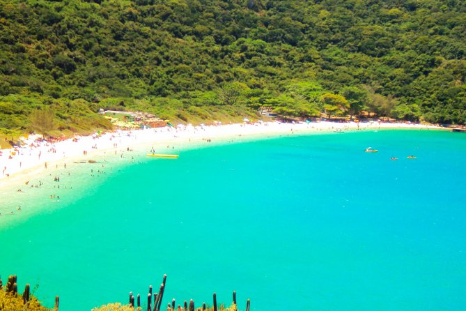
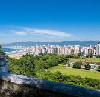
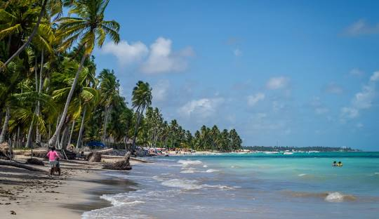

Praias do Brasil
O Brasil é um dos píses tropicais conhecidos pelas praias mais bonitas do planeta.Confira as melhores praias para esse verão.
Jericoacora(CE)

Jericoacoara é uma praia localizada na vila homônima, no município de Jijoca de Jericoacoara, no estado do Ceará, no Brasil. Está localizada a 295 km a oeste da capital do estado, Fortaleza. Foi eleita em 1994 pelo jornal estadunidense The Washington Post uma das dez praias mais bonitas do planeta.Em 2014 , foi eleita pelo Huffington Post a quarta melhor praia da Terra.É um dos locais mais frequentados por praticantes de windsurfe no país. A praia é parte integrante do Parque Nacional de Jericoacoara.
Atrações:
- Pedra furada.
- Duna do Pôr do Sol.
- Serrote.
- Farol de Jericoacoara
- Campo das Dunas
Baía do Sancho, Fernando de Noronha(PE)

A Baía do Sancho, em Fernando de Noronha, foi eleita a melhor praia do mundo em 2023 pelo site TripAdvisor.A votação é feita entre viajantes que usam o site e considera a qualidade e quantidade de avaliações feitas ao longo do ano anterior.
A Baía do Sancho já foi eleita a melhor praia do mundo em outras ocasiões, nos anos de 2014, 2015, 2017, 2019 e 2020.
A Baía do Sancho é um local de grande beleza natural, com águas cristalinas, mar azul turquesa, falésias, mirantes e trilhas. A praia é cercada por vegetação e areia clara, o que a torna um lugar ideal para a prática de mergulho.
Para chegar à Baía do Sancho, é possível descer um paredão de mais de 50 metros de altura ou chegar de barco.
Atrações:
- Parques. Parque Nacional Marinho de Fernando de Noronha.
- Praias. Baía dos Porcos.
- Excursões de vários dias. EmNoronha Agência de Viagens.
- Passeios turísticos. Ilhatour.
- Deques e torres de observação.
- Mergulho com cilindro e snorkel.
Praia do Forno,Arraial do Cabo(RJ)

A Praia do Forno, em Arraial do Cabo, no Rio de Janeiro, tem um nome que pode estar associado a um forno de uma antiga olaria ou à temperatura da areia.
A formação da região de Arraial do Cabo começou há cerca de um milhão de anos, quando ventos e correntes marítimas incorporaram ao continente três ilhas, que hoje são os Morros do Mirante, do Forno e Pontal do Atalaia. Os primeiros habitantes humanos chegaram à região há cerca de cinco mil anos.
A Praia do Forno é conhecida por ser um local ideal para mergulho, devido à sua formação geológica e à biodiversidade marinha. A praia tem cerca de 600 metros de extensão e é envolvida por grandes paredões rochosos cobertos de Mata Atlântica. Mesmo na parte rasa da água, é possível ver peixes, corais e outros animais marinhos.
Para chegar à praia, é possível fazer uma trilha que dura cerca de 10 minutos. A trilha é tranquila, mas pode ser um pouco escorregadia devido à areia
Atrações:
Búzios dia inteiro: passeio de barco e bonde com almoço de Búzios.
Excursão de bonde de 3 horas para grupos pequenos pela Península de Búzios ao ar livre.
Búzios dia inteiro: passeio de barco e bonde com almoço de Cabo Frio.
Praia Gande(SP)

A região foi uma das primeiras colonizadas pelos portugueses no Brasil, quando da chegada de Martim Afonso de Sousa no litoral de São Paulo em 1532. Martim Afonso fundou, naquele ano, a primeira vila brasileira, São Vicente, da qual o território que pertenceria a Praia Grande foi parte até 1967.
Atrações:
Trilha Do Rio Do Boi. 1.164.
Quadriciclo Nos Canyons. 201.
Trilha do Canyon Malacara (entrada na fenda).
Trilha Vale da Pedra Branca.
Morro dos Cabritos.
Guia Cristiano Raupp.
Canyons Sc Ecoturismo.
4x4 Canyon Garganta Do Silveirão
Praia de Antunes,Maragogi(AL)

A Praia de Antunes, em Maragogi, Alagoas, recebeu o seu nome da família Antunes, que era proprietária de grande parte da terra no século XIX.
A Praia de Antunes é um destino popular para os moradores de cidades próximas, como Maceió, e é considerada uma das paradas obrigatórias para quem visita Maragogi.
Apesar do desenvolvimento nos últimos anos, a praia conserva o seu charme remoto e relaxado. É uma praia isolada e pouco visitada por turistas, por isso, parece quase intocada pelo homem.
A Praia de Antunes é uma continuação da praia de Maragogi e todas as praias são iguais quando a maré está baixa. Quando a maré sobe, quase não há espaço nas areias.
Atrações:
Piscinas naturais (Galês, Piscina de Taocas e Barra Grande)
Passeios de buggy.
Passeios de barco.
Stand up paddle, caiaque e vela.
Mergulhos de snorkel.
Pedras Artificiais.